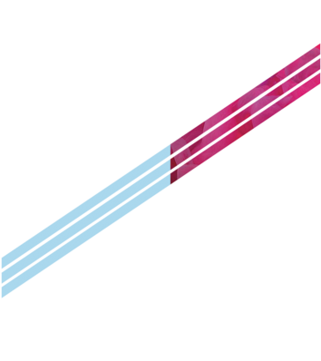

简历
RESUME

个人信息
姓名：李苗
年龄：26岁
学校：黑龙江财经学院
专业：计算机网络技术
籍贯：黑龙江省
居住地址：北京市昌平区
专业技能
-
- js|||||||||||||||||||||||||| 50%
- css3|||||||||||||||||||||||||||||||||||| 70%
- H5|||||||||||||||||||||||||||||||||||| 70%
- node||||||||||||||||||| 30%
项目经验
-
PC 京东/网易音乐
html，css，js还原京东及网易音乐首页
https://lm-1-3.github.io/JD.html/
https://lm-1-3.github.io/wangyiyunM.html/ -
移动端 QQmusic/简历
css3，html5，less,js还原html页面及一些效果
https://lm-1-3.github.io/Mobile-qqMusic/
静候佳音
QQ:1678190490
微信：limiao013
邮箱：1678190490@qq.com
手机：18211193616